POV-Ray Object Collection
| 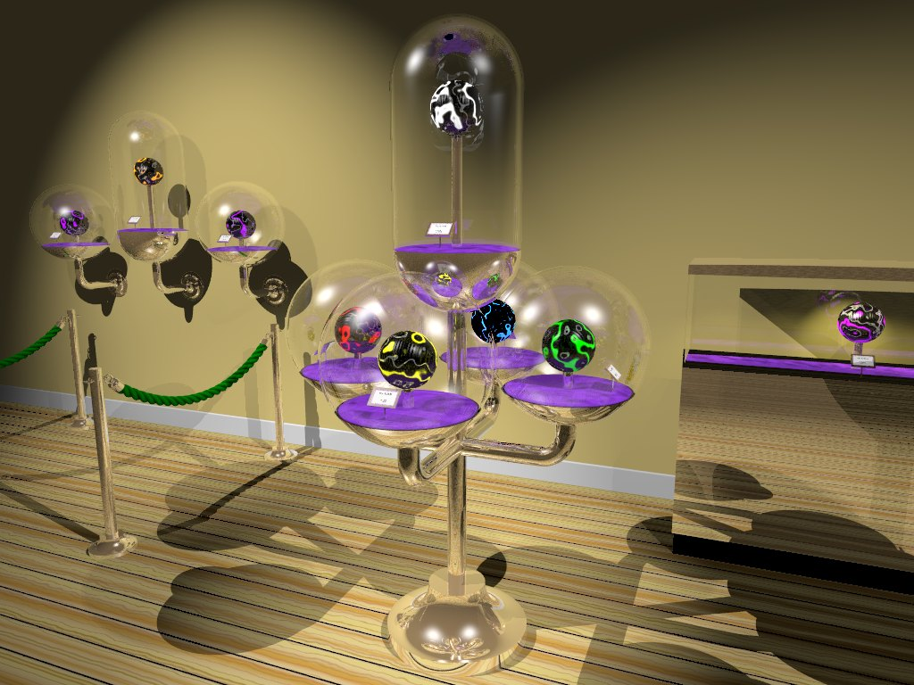 |
This download consists of:
In its simplest form you can add a display case to your scene file by including the file "displaycase.inc" and then calling the 'DisplayCase' macro. This macro requires two parameters. Specifying an empty string for each generates the default display case object.
The default object is a spherical display case with a diameter of 0.6 POV-Ray units. The display case returned by this macro is positioned standing upright at the origin, but you can scale, rotate and translate it by wrapping the macro call in an 'object' statment (see below).
The default glass and metallic materials/textures are quite reflective, so there really has to be something else in the scene to reflect in the surfaces. Otherwise these materials will not look very good at all. If rendered against a flat coloured background they will take on that flat color and won't look bright and shiny. The examples in this document use a wooden floor and a plain yellow wall as a backdrop. The code for this is shown in the following example. Similar backdrops are present in the renderings of the other examples.
The macros were developed for POV-Ray 3.7 which has different default gamma settings to 3.6. You can optionally use the assumed_gamma setting in 3.6 to adjust for this difference. You may need to tweak this value for your system. A higher assumed_gamma setting results in a darker scene and a lower setting in a lighter scene.
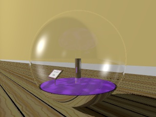
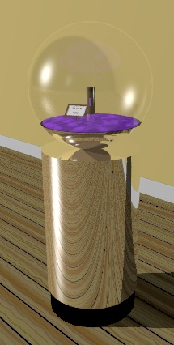 Normally you will wish to specify parameters to control the type of display case that the macro creates and you are likely to want to reposition the generated object in your scene.
The first parameter on the DisplayCase macro call defines the type of display case and should be "Spherical", "Oblong", "Cylindrical" or "Box". The second parameter controls how the display case is mounted and is usually "Pedestal", "Tree", "Wallmount", "RoundPillar" or "RectangularPillar". The second parameter can also be used to generate a couple of 'extra' objects, namely:
To perform transformations such as scale, rotate and translate on the generated object you will need to wrap the macro call in an 'object' statement, as illustrated in the next example:
The parameters tell the macro to generate a spherical display case on top of a simple round pillar. The object that is generated by the macro can then be rotated and translated into any required position. It can also be scaled to an appropriate size if you are working in units other than 1 metre = 1 POV-Ray unit. Note that you should always scale it before translating it to the required position.
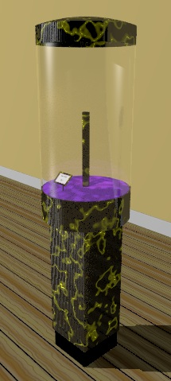 Many attributes can be controlled by setting variables before calling the 'DisplayCase' macro. There are settings to allow you to easily adjust the size and shape of a display case. There are also settings enabling you to readily replace the materials used to construct the various component parts. In addition a couple of macros are provided that you can use to set alternative 'canned' default materials.
The following example calls the 'DisplayCase_MarbleMaterial' macro which simply sets the 'DisplayCase_DefaultMaterial' identifier to create a default material with a Yellow marble-like effect. This example also explicitly specifies a display case height for this Cylindrical display case.
The variables and macros that you can use are described in the reference section of this document at the bottom of this page.
When creating your scene you will need to use identifiers with the prefix "DisplayCase_" to refer to the identifiers defined within this document, but you should avoid using this prefix for anything else that you add to your scene. By reserving this prefix for the DisplayCase macros it should be possible for you to download any future versions without your identifiers clashing.
Various examples are provided (including the ones given above) in the file 'displaycase.pov'. To render any of the examples in the 'displaycase.pov' file simply set the 'Example' variable at the top to the number of the example you wish to render.
Dimensions are specified in metres. The ScaleConvert macro from the POV-Ray Object Collection can be used to convert between different units of measure.
| 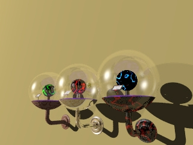 | 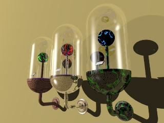 |
| 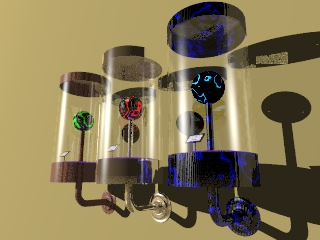 | 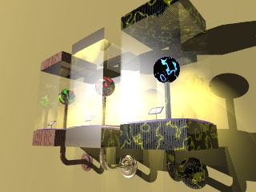 |
These can all be customised by declaring variables before calling the 'DisplayCase' macro, to control the construction of the display case. The following table lists the variables applicable to each display case type.
The following image illustrates a small selection of the available options:
You can also add new types of display case. (see below).
| 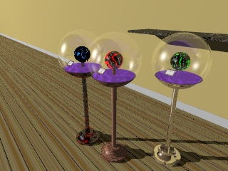 | 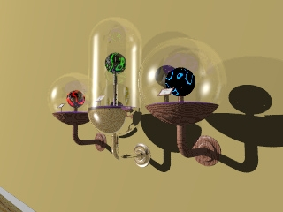 |
| 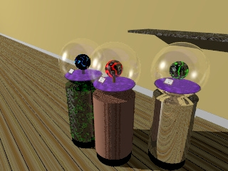 | 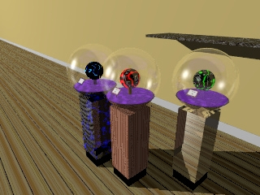 |
| 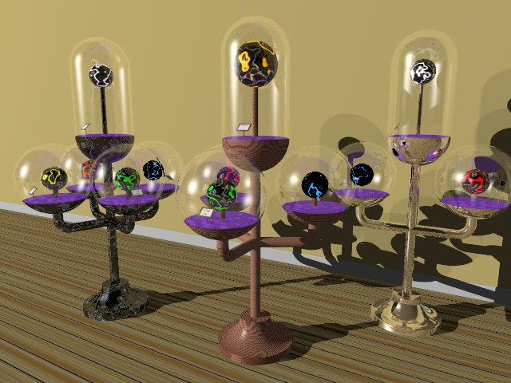 | |
The various mounts can all be customised by declaring variables before calling the 'DisplayCase' macro. The "Tree" type mount supports multiple display cases and there are arrays to allow you to control key aspects of each display case used. Example 24 in 'displaycase.pov' illustrates the use of these arrays. The following table lists the variables applicable to each mount type.
You can also add new types of mount. (see below).
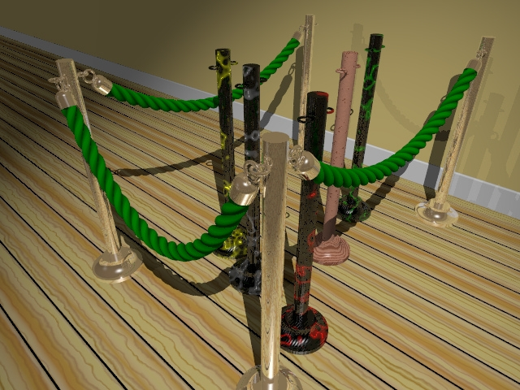 In addition to being used to specify a mount type, the second parameter on the DisplayCase macro can also be used to add a couple of extra objects that you may find useful when creating a scene that incorporates the display cases. The two extra objects currently supported are "BarrierPost" and "RopeHook". These can be used in combination with the Rope macros to create a rope barrier. The Rope macros can be downloaded from the POV-Ray Object Collection.
The image on the right shows a barrier formed using 4 "BarrierPost" objects, connected by 3 ropes. Each rope has a cap on each end which is generated using the "RopeHook" object. Five more posts have been randomly positioned inside the barrier just to illustrate how the posts look when constructed using some of the other available 'canned' materials.
The image below shows a closeup of the "RopeHook" objects at one of the corners of the barrier. You can add a post to your scene file using the following syntax:
Similarly you can add a hook to the end of a rope using the following syntax:
The rope hook is centred so that you can rotate it as required to orient it and then translate it directly to the start point or end point of your rope object.
Examples 4 and 5 in the 'displaycase.pov' file are used to generate these two images and can be examined to understand the detail of how a rope barrier is constructed.
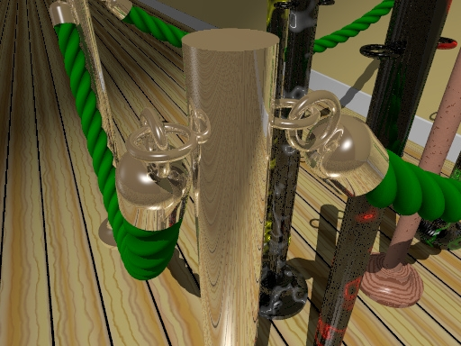
(See Examples 4 and 5 in 'displaycase.pov')
These objects can be customised by declaring variables before calling the 'DisplayCase' macro. The following table lists the variables applicable to these objects.
Each type of display case is created by a macro, so to create a new type you can copy a macro for the type that is closest to the one you wish to create and rename it to give it a suitable name. The 'DisplayCase_Spherical' macro is one of the easiest to understand if you're new to this sort of thing. Once you've done this you'll need to add a case statement into the 'DisplayCase_MakeCase' macro to interpret the name you choose for your type of display case and to call the macro you just created.
You don't necessarily need to make your macro compatible with the other macros, but, if you do you can easily add it to any of the mounts defined and you can most readily insert exhibits and select alternative materials to construct your display case.
Each macro returns a single union of objects. These macros follow the convention that the main assembly is done with the bottom surface of the inside of the display case centred at the origin <0,0,0>. Then, at the end of the union definition, the entire display case, exhibit, lights and all, is translated upwards so that the bottom of the base of the case sits at the origin when the object is complete.
The 'DisplayCase_Exhibit' identifier is used to pass in the exhibit object. The macro usually adds this object (if defined), centering it over the origin at a height determined by the length of the rod intended to support the exhibit (DisplayCase_SupportRodHeight).
You can define new variables as you need to within your macro, but using the same variable names as other macros (where appropriate) improves compatibility with existing macros.
Each display case mount is created by a macro, so to create a new type you can copy a macro for the mount that is closest to the one you wish to create and rename it to give it a suitable name. The 'DisplayCase_RoundPillar' macro is one of the easiest to understand if you're new to this sort of thing. Once you've done this you'll need to add a case statement into the 'DisplayCase' macro to interpret the name you choose for your display case mount and to call the macro you just created.
You don't necessarily need to make your macro compatible with the other macros, but, if you do you can easily add any of the predefined types of display case to it.
The macro returns a single union of objects. While building this object it is conventional to work at the origin with the centre of the fixing point at <0,0,0>. For example, floor-standing mounts are defined with the centre of the base at floor-level at <0,0,0>. Wall-mounted brackets are defined with the centre of the mounting plate where it would align with the wall at <0,0,0>, as if the wall is at the X-Y plane with the object mounted on the -Z side of it.
At the end of the union definition you should add the display case by calling the 'DisplayCase_MakeCase' macro, specifying the 'DisplayCase_Type' variable as the parameter. Translate the resulting object to the correct position on the mounting structure that you have defined.
You can define variables as you need to, but using the same variable names as other macros (where appropriate) improves compatibility with other display case macros.
Notice that you can also use this approach for adding other objects that you might find useful. For example, the 'BarrierPost' mount type invokes the 'DisplayCase_BarrierPost' macro, which returns a floor-standing post that can be used to construct a rope barrier and consequently does not incorporate a display case.
| displaycase.inc | The main include file containing the DisplayCase macros. | |
|---|---|---|
| displaycase.pov | A scene file illustrating the use of the DisplayCase macros to generate a range of different examples. | |
| displaycase.html | This document. | |
There are 3 automatically generated text files that contain a description, keywords for the search engine and any prerequisites registered against the version you downloaded. Although the file names start with the prefix "displaycase_", you shouldn't try to upload these files with the rest of the files. You may however edit these files before performing an upload so that you can pull the contents into the relevant text fields on the submission screen. This avoids you having to type in large amounts of text while submitting your new version.
Most of the files included with the DisplayCase macros are sample images and documentation files. If you don't wish to distribute all of these files you only need to include a copy of the file 'DisplayCase.inc' or a cut-down version of it.
If you plan to submit your object to the POV-Ray Object Collection at http://lib.povray.org/ you will need to rename the files to conform to the naming standards (All files from your submission will need the same unique prefix).
|
DisplayCase macro DisplayCase_Undef macro |
DisplayCase_MarbleMaterial macro DisplayCase_WoodMaterial macro |
DisplayCase_SampleExhibit DisplayCase_SampleFloorTexture macro |
Other macros are used internally and may be of interest if you wish to modify the internal behaviour of the main macro. They are documented in the second table below (for completeness).
You can call the 'DisplayCase' macro from within your scene file one or more times to add as many display cases as you want. If you wish to reset settings between calls you may call the 'DisplayCase_Undef' macro. This reverts almost everything to how it was before you or the macros started setting things. This may be handy if you adjusted some settings for the first display case or if the DisplayCase macro set some defaults that you wish to revert to their undefined state before adding a second display case to your scene.
The 'DisplayCase_MarbleMaterial' and 'DisplayCase_WoodMaterial' macros pick up alternative material settings and assign that material to the 'DisplayCase_DefaultMaterial' identifier. When the 'DisplayCase' macro is called, this material is used as the default wherever a specific material has not been declared. Note that, if you change the setting of 'DisplayCase_DefaultMaterial' (either by hand or by using one of the default material macros) after having already called the 'DisplayCase' macro, you should call the 'DisplayCase_Undef' macro beforehand, otherwise the various materials will retain the values already assigned to them by the earlier call to the 'DisplayCase' macro.
| DisplayCase macro | |||||
|---|---|---|---|---|---|
|
The DisplayCase macro serves as a sort of switch-board, interpreting the parameters that you have specified and calling the internal macros required to build the display case and the supporting components. The first half of this macro checks that various configuration variables have been set correctly and assigning default values as required. The second half calls internal macros to construct the required display case, returning a single POV-Ray object consisting of a union of all of the components required.
The object returned by this macro is aligned with the origin <0,0,0>. You can wrap the macro call in an 'object' statement so that you can scale, rotate and translate the generated object as required. You should usually scale and rotate the object before translating it into position. See the introductory examples above. This macro has 2 parameters:
| |||||
| DisplayCase_MarbleMaterial macro | |||||
|
The DisplayCase_MarbleMaterial macro declares the 'DisplayCase_DefaultMaterial' variable and assigns a marble material to it that can be used to override the default gold material used to construct the display cases.
This macro has 1 parameter:
| |||||
| DisplayCase_SampleExhibit macro | |||||
|
The DisplayCase_SampleExhibit macro returns a sample object that can be used as an exhibit for testing and demo purposes. This macro has 1 parameter:
| |||||
| DisplayCase_SampleFloorTexture macro | |||||
|
The DisplayCase_SampleFloorTexture macro returns a simple wood panel texture used in most of the examples in the 'displaycase.pov' file to represent a wooden floor.
This macro has 0 parameters: | |||||
| DisplayCase_WoodMaterial macro | |||||
|
The DisplayCase_WoodMaterial macro declares the 'DisplayCase_DefaultMaterial' variable and assigns a wood material to it that can be used to override the default gold material used to construct display cases.
This macro has 0 parameters: | |||||
| DisplayCase_Undef macro | |||||
The DisplayCase_Undef macro undefines identifiers that may previously have been defined by the DisplayCase macro or by you to control it. Of particular interest are identifiers that are declared with a global context by the DisplayCase macros. Most default values within the macros are assigned using the '#local' statement, so don't persist once the macro ends. Notable exceptions are:
This macro has 0 parameters: | |||||
They are usually only called internally by other macros in the set. They are documented here for completeness and to assist anyone wishing to extend the capabilities of this set of macros.
| DisplayCase_ArrayMessage macro | |||||
|---|---|---|---|---|---|
|
The DisplayCase_ArrayMessage macro adds an information message into the message stream if an array is found to have an innapropriate number of elements.
This macro has 2 parameters:
| |||||
| DisplayCase_BarrierPost macro | |||||
|
The DisplayCase_BarrierPost macro adds a simple post that you can use to construct a rope barrier within your scene file. This consists of a cylindrical shaft set into a rounded base with two rings attached to the top of the shaft so that a rope can be attached. The dimensions of the post are controlled using variable settings. This macro is automatically invoked when you specify "BarrierPost" as the second parameter on the call to the 'DisplayCase' macro.
This macro has 0 parameters: | |||||
| DisplayCase_Box macro | |||||
|
The DisplayCase_Box macro returns a box shaped display case. This macro is automatically invoked when you specify "Box" as the first parameter on the call to the 'DisplayCase' macro.
This macro has 0 parameters: | |||||
| DisplayCase_Cylindrical macro | |||||
|
The DisplayCase_Cylindrical macro returns a cylindrical display case. This macro is automatically invoked when you specify "Cylindrical" as the first parameter on the call to the 'DisplayCase' macro.
This macro has 0 parameters: | |||||
| DisplayCase_DefaultMaterials macro | |||||
|
The DisplayCase_DefaultMaterials macro assigns default material settings for use when constructing display cases, mounts and accoutrements. This macro is automatically invoked when you call the 'DisplayCase' macro.
This macro has 0 parameters: | |||||
| DisplayCase_FloorStand macro | |||||
|
The DisplayCase_FloorStand macro creates a floor stand. This macro is automatically invoked when you specify "Pedestal", "BarrierPost" or "Tree" as the second parameter on the call to the 'DisplayCase' macro.
This macro has 0 parameters: | |||||
| DisplayCase_Label macro | |||||
|
The DisplayCase_Label macro returns a label describing an exhibit. This label is normally inserted into the display case to describe the contents. This macro is automatically invoked whenever you generate a display case.
This macro has 0 parameters: | |||||
| DisplayCase_MakeCase macro | |||||
|
The DisplayCase_MakeCase macro returns a display case definition to the macro that called it. The default display case is "Spherical". This macro is automatically invoked whenever you generate a display case.
This macro has 1 parameter:
| |||||
| DisplayCase_Oblong macro | |||||
|
The DisplayCase_Oblong macro returns an oblong cylindrical display case. This macro is automatically invoked when you specify "Oblong" as the first parameter on the call to the 'DisplayCase' macro.
This macro has 0 parameters: | |||||
| DisplayCase_Pedestal macro | |||||
|
The DisplayCase_Pedestal macro returns an object intended to represent a floor-standing base supporting a display case. This macro is automatically invoked when you specify "Pedestal" as the second parameter on the call to the 'DisplayCase' macro.
This macro has 1 parameter:
| |||||
| DisplayCase_RectangularPillar macro | |||||
|
The DisplayCase_RectangularPillar macro returns an object to represent a rectangular pillar supporting a display case. This macro is automatically invoked when you specify "RectangularPillar" as the second parameter on the call to the 'DisplayCase' macro.
This macro has 1 parameter:
| |||||
| DisplayCase_RopeHook macro | |||||
|
The DisplayCase_RopeHook macro returns an object to represent a connecting cup to connect the end of a rope to a barrier post. This macro is automatically invoked when you specify "RopeHook" as the second parameter on the call to the 'DisplayCase' macro.
This macro has 0 parameters: | |||||
| DisplayCase_RoundPillar macro | |||||
|
The DisplayCase_RoundPillar macro returns an object to represent a round pillar supporting a display case. This macro is automatically invoked when you specify "RoundPillar" as the second parameter on the call to the 'DisplayCase' macro.
This macro has 1 parameter:
| |||||
| DisplayCase_Spherical macro | |||||
|
The DisplayCase_Spherical macro returns a spherical display case. This macro is automatically invoked when you specify "Spherical" as the first parameter on the call to the 'DisplayCase' macro.
This macro has 0 parameters: | |||||
| DisplayCase_SupportArm macro | |||||
|
The DisplayCase_SupportArm macro returns a horizontal support arm to hold a display case. This arm turns up at the end to join onto the base of the display case. This macro is automatically invoked when you specify "Tree" or "WallMount" as the second parameter on the call to the 'DisplayCase' macro.
This macro has 0 parameters: | |||||
| DisplayCase_Tree macro | |||||
|
The DisplayCase_Tree macro can generate quite a range of variants incorporating multiple display cases assembled around a floor-standing pedestal in s sort of 'tree' structure. The configuration of the tree structure and of the individual display cases can be controlled using a set of arrays. This macro is automatically invoked when you specify "Tree" as the second parameter on the call to the 'DisplayCase' macro. By default this macro generates a single central oblong display case on a central pole, surrounded by 3 spherical display cases mounted on top of supporting arms.
This macro has 0 parameters: | |||||
| DisplayCase_WallMount macro | |||||
|
The DisplayCase_WallMount macro returns an object to represent a wall-mounted pole supporting a display case. This macro is automatically invoked when you specify "WallMount" as the second parameter on the call to the 'DisplayCase' macro.
This macro has 1 parameter:
| |||||
| DisplayCase_WallPlate macro | |||||
|
The DisplayCase_WallPlate macro returns an object to represent a fixing plate for bolting a supporting arm to the wall. This macro is automatically invoked when you specify "WallMount" as the second parameter on the call to the 'DisplayCase' macro.
This macro has 0 parameters: | |||||
Don't be put off by the number of variables shown here. They all have default values, so you can start adding display cases to your POV-Ray scene without bothering with any of them if you wish. If you do want greater control though, there are lots of things you can easily adjust to meet your needs.
To set one of these values you simply #declare it before calling the DisplayCase macro.
| DisplayCase_ArmLength | This decimal value is used where the mount-type specified on the DisplayCase macro is "WallMount" to control the horizontal length of the pole that joins the bottom of the display case to the wall. The distance is measured from the centre of the base of the display case to the surface of the wall. This variable defaults to 0.35 POV-Ray units and is intended to represent a distance of 35cm. |
|---|---|
| DisplayCase_BaseHeight | This decimal value is used to control the height of the base of the "BarrierPost" object and for the floor-standing base of the "Pedestal" and "Tree" objects. This defaults to 0.08 POV-Ray units for the "BarrierPost" object, 0.12 POV-Ray units for the "Pedestal" object and 0.24 for the "Tree" object, which is intended to represent 8cm, 12cm and 24cm respectively. |
| DisplayCase_BaseInset | This decimal value is used to control the radius of the inset curve around the rim of the base of the object when the "BarrierPost", "Pedestal" and "Tree" objects are created. This defaults to 0.06 POV-Ray units for the "BarrierPost" object, 0.09 POV-Ray units for the "Pedestal" object and 0.18 for the "Tree" object, which is intended to represent 6cm, 9cm and 18cm respectively. |
| DisplayCase_BaseMaterial | This material identifier is used to control the material from which the outside of the base of the display case is constructed. This defaults to a slightly yellow pigment with a highly reflective finish intended to represent a golden metallic surface. |
| DisplayCase_BaseRadius | This decimal value is used to control the radius of the base of the floor-stand used to generate the "BarrierPost", "Pedestal" and "Tree" objects. This defaults to 0.12 POV-Ray units for the "BarrierPost" object, 0.18 POV-Ray units for the "Pedestal" object and 30cm for the "Tree object", which is intended to represent 12cm, 18cm and 30cm respectively. |
| DisplayCase_BracketHeight | This decimal value is used to control the height at which the centre of the wall bracket will end up when the "WallMount" mount type is used. This defaults to 0 POV-Ray units, which places the centre of the back of the wall bracket at the origin. This value is not usually changed as it is simpler to move the object once it's been generated. If you do change it, make sure that the value of 'DisplayCase_CaseHeight' is sufficiently larger than the value for 'DisplayCase_BracketHeight' to accomodate the supporting arm that joins the display case to the wall bracket. |
| DisplayCase_CaseHeight | This decimal value is used to control the height that the centre of the bottom of the display case will end up at when the "WallMount" mount type is used. This defaults to 0.2 POV-Ray units, which is intended to represent a height of 20cm. Make sure that this value is sufficient to accomodate the supporting arm that joins the display case to the wall bracket. |
| DisplayCase_CaseLights | This decimal value is used to control the intensity of the lights within the "Box" and "Cylindrical" objects. With these types of display case, lights are incorporated into the top covers, shining down onto the contents. This value is typically between 0 and 1 and defaults to 1. A value of 0 prevents lights from being added to the display case. |
| DisplayCase_CupLength | This decimal value is used to control the length of the end-cap incorporated into the "RopeHook" object when it is generated. The end-cap on the "RopeHook" object forms a cup shape which is intended to cover the end of a rope. This defaults to twice the cup radius as controlled using the 'DisplayCase_CupRadius' setting. |
| DisplayCase_CupRadius | This decimal value is used to control the radius of the end-cap incorporated into the "RopeHook" object when it is generated. The end-cap on the "RopeHook" object forms a cup shape which is intended to cover the end of a rope. This defaults to 0.03 POV-Ray units, which is intended to represent a radius of 3cm. |
| DisplayCase_DefaultMaterial |
This material identifier is used to control the default material. If you override this setting before calling the DisplayCase macro for the first time then various other materials that have not yet been set will be set using this material by that macro. If not set, this material setting itself defaults to a slightly yellow pigment with a highly reflective finish intended to represent a golden metallic surface.
Once a call to the DisplayCase macro has been made and it's set the various materials they will remain set for subsequent macro calls, so setting this value between macro calls has little effect unless you first #undef the other materials that you want it to affect. You can undef all materials (and all other identifiers) by calling the 'DisplayCase_Undef' macro. |
| DisplayCase_Depth | This decimal value is used to control the depth dimension of a "Box" type display case (you can set the width, depth and height). This defaults to 0.5 POV-Ray units, which is intended to represent a depth of 50cm. |
| DisplayCase_EdgeRadius | This decimal value is used to control the radius of the end-rim of the end-cap incorporated into the "RopeHook" object when it is generated. The end-cap on the "RopeHook" object forms a cup shape which is intended to cover the end of a rope. The end-rim of the end-cap provides a rounded end to the cup. A very small value results in a squared-off end, whereas a value approaching the value assigned to 'DisplayCase_CupRadius' will result in a dome-shaped end. This defaults to 0.75 times the value of 'DisplayCase_CupRadius' giving the "RopeHook" object a quite well-rounded end-cap. |
| DisplayCase_ElbowRadius | This decimal value is used to control the radius of the bend on the arm that's used to support the display case when the "WallMount" and "Tree" types of mount are used. This defaults to 0.1 POV-Ray units, which is intended to represent a radius of 10cm. |
| DisplayCase_Exhibit | This object identifier is used to specify an object (complete with texture) for display inside a display case. If this object identifier is not defined the display case will be left empty. For testing purposes you can set this identifier using the 'DisplayCase_SampleExhibit' macro to generate the simple sphere with a marble texture of a given color that is used in many of the examples in this document. |
| DisplayCase_ExhibitSupportMaterial | This material identifier is used to specify the material from which the cylindrical support that holds up the exhibit in the middle of the display case is to be made. This defaults to a slightly yellow pigment with a highly reflective finish intended to represent a golden metallic surface. |
| DisplayCase_Exhibits |
This array of objects is used to define objects for display inside the set of display cases created when the "Tree" mount is used. This type of mount builds a tree supporting multiple display cases and you can specify a different exhibit object fcr each display case. The [0] element of the array is used for the display case that is positioned on top of the central post with the remaining array elements being used sequentially for the display cases that encircle the central column. If a particular array element is not defined, the corresponding display case will be left empty.
Note that the number of elements in the DisplayCase_Exhibits array (ie the size of the array) should always be equal to the number of display cases you wish to be built into the "Tree" object, otherwise errors may be generated. For example:
#include "displaycase.inc"
#declare DisplayCase_Exhibits = array [5]; #declare DisplayCase_Exhibits [4] = sphere{0,0.1 pigment {rgb 1}}; DisplayCase("","Tree") This generates a tree object with 5 display cases adding a White sphere into the last display case, but leaving the rest empty. |
| DisplayCase_FabricHeight | This decimal value is used to control the height of the fabric used to cover the inside of the base of a display case. This 'fabric' object is simply a section of a torus with a bumpy texture intended to give the impression of being a loose cloth cover. This height defines how far up into the case the highest part of this object extends. This value defaults to 0.016 POV-Ray units, which is intended to represent a height of 16 millimetres. |
| DisplayCase_FabricMaterial | This material identifier is used for the fabric that covers the inside of the base of a display case. This 'fabric' object is simply a section of a torus. This material defaults to a slightly bumpy purple texture intended to give the impression of being a loose cloth cover. |
| DisplayCase_FabricShape | This string is used to control the outline shape of the object used to simulate a fabric that lines the inside of the base of a "Box" type display case. This 'fabric' object is simply a section of a torus with a bumpy texture intended to give the impression of being a loose cloth cover, but it can be trimmed to fit the box exactly using the "Rectangular" setting or can be shaped using the "Eliptical" setting. The default is "Rectangular". |
| DisplayCase_FloorStandMaterial | This material identifier is used to control the material from which the floor stand is made when a mount type of "Pedestal" or "Tree" is specified, or when a "BarrierPost" is specified. This defaults to a slightly yellow pigment with a highly reflective finish intended to represent a golden metallic surface. |
| DisplayCase_GlassMaterial | This material identifier is used for the glass surfaces of the display cases. This defaults to a highly reflective transparent material with a glass-like index of refraction (IOR). |
| DisplayCase_GlassThickness | This decimal value is used to control the thickness of the glass used to construct the display cases. This value defaults to 0.008 POV-Ray units, which is intended to represent a thickness of 8 millimetres. |
| DisplayCase_Height | This decimal value is used to specify the height of a display case when using the "Box", "Cylindrical" and "Oblong" display case types. This value defaults to 1.1 POV-Ray units for "Oblong" display cases and to 1.0 POV-Ray unit for "Box" and "Cylindrical" display cases. This is intended to represent a height in metres. |
| DisplayCase_JointHeight |
This decimal value can be used with the "Spherical", "Box" and "Cylindrical" display cases to control the height of the joint between the opaque base of the display case and the glass part of the display case.
The height of the joint on the "Oblong" display case is fixed and equals the radius setting. |
| DisplayCase_JointHeights |
This array of decimal values can optionally be used with the "Tree" mount to control the heights of the bases of individual display cases. This type of mount builds a tree supporting multiple display cases and you can specify a different base joint height for each display case. The [0] element of the array is used for the display case that is positioned on top of the central post with the remaining array elements being used sequentially for the display cases that encircle the central column.
If you declare this array, the array size should be equal to the number of display cases you want to add into the tree object. If this array is not set the 'DisplayCase_JointHeight' variable will be used to determine the height of the base of each unit. |
| DisplayCase_JointMaterial | This material identifier is used to control the material from which the rim around the base of a display case is made. This rim is around the top surface of the base of the display case and forms the surface upon which the glass rests. This defaults to a matt-black material. |
| DisplayCase_KickPlateHeight | This decimal value is used to optionally specify the height of a kick-plate at the base of a "Box" or "Cylindrical" type of display case. The bases of both of these two display case types can readily be extended to the floor enabling them to be uses as free-standing display cases. They support this variable to enable an inset kickplate to be added at floor level. This value defaults to 0 POV-Ray units resulting in no kick-plate being created. If you specify a value of 0.12 POV-Ray units an inset kick-plate will be added. This value is intended to represent a height in metres. |
| DisplayCase_KickPlateInset | This decimal value is used to optionally specify the inset to be used for a kick-plate at the base of a "Box" or "Cylindrical" type of display case. The bases of both of these two display case types can readily be extended to the floor enabling them to be uses as free-standing display cases. They support this variable to enable an inset kickplate to be added at floor level. This value defaults to 0.01 POV-Ray units intended to represent an inset of 1cm, if a kickplate is present. A kickplate will only be present if a non-zero value is specified for 'DisplayCase_KickPlateHeight'. |
| DisplayCase_KickPlateMaterial | This material identifier is used to control the material from which a kick-plate is made if present when a "Box" or "Cylindrical" type of display case is generated. A kick-plate can be added to these two types of display case by specifying a non-zero value for the 'DisplayCase_KickPlateHeight' variable. This defaults to a matt-black surface material. |
| DisplayCase_LabelAngle | This decimal value is used to specify the angle in degrees at which the label panel within a display case is set. This value defaults to 45, representing 45 degrees. |
| DisplayCase_LabelHeight | This decimal value is used to specify the height of the label that is displayed on the label panel inside a display case. This value defaults to 0.054, representing a label height of 54 millimetres. |
| DisplayCase_LabelHolderMaterial | This material identifier is used to control the material from which the label holder within a display case is made. This defaults to a slightly yellow pigment with a highly reflective finish intended to represent a golden metallic surface. |
| DisplayCase_LabelPanelHeight | This decimal value is used to specify the height of the centre of the label holder above the base of the display case. It therefore defines the length of the small cylindrical rod used to support the label panel. This value defaults to 0.08, representing a height of 8 centimetres. |
| DisplayCase_LabelPigment |
This pigment identifier is used to control the pigment from which the label that is added into a display case to describe the exhibit is formed. You can use any form of pigment, but it is easiest to use an image file. The default pigment is defined using a GIF format image file consisting of a plain White background with a few lines of text on it.
#declare DisplayCase_LabelPigment = pigment {image_map {gif "displaycase_defaultlabel.gif"}}
This pigment needs to be positioned so that the part intended to appear on the label occupies a unit square on the X-Y plane from <0,0> to <1,1> (the default position for an image_map). The pigment needs to cross the plane Z=0 in the Z-direction. The DisplayCase macro automatically scales, orients and moves this pigment to fit the front face of the label object, based upon the current label settings. The pigment should not start exactly at the plane Z=0, or the results become unpredictable. It's best therefore not to use the 'once' keyword on your image_map specification because this causes the pigment to start exactly at Z=0. If instead of using an image_map you use a text object to create an object pigment, you'll need to translate it slightly in the -z direction because the default text position makes the front-face of the text object start exactly at Z=0. |
| DisplayCase_LabelPigments |
This array of pigments can optionally be declared when using the "Tree" parameter of the DisplayCase macro call to create multiple display cases. This enables you to specify a different pigment or image for each label. If an array element is not defined the default label will be used for that display case.
See the description of 'DisplayCase_LabelPigment' for more details on specifying such pigments. |
| DisplayCase_LabelRimDepth | This decimal value is used to specify the depth of the rim around the edge of the label holder. The surface of the label is inset into the label holder by this amount. This value defaults to 0.005, representing a depth of 5 millimetres. |
| DisplayCase_LabelRimWidth | This decimal value is used to specify the width of the rim around the edge of the label holder. This value defaults to 0.008, representing a width of 8 millimetres. |
| DisplayCase_LabelSuppRadius | This decimal value is used to specify the radius of the cylindrical rod that supports the label holder. This value defaults to 0.003, representing a radius of 3 millimetres. |
| DisplayCase_LabelSupportMaterial | This material identifier is used to control the material used to construct the little cylindrical support that holds up the label holder. This defaults to a slightly yellow pigment with a highly reflective finish intended to represent a golden metallic surface. |
| DisplayCase_LabelWidth | This decimal value is used to specify the width of the label that is on the panel inside a display case. This value defaults to 0.084, representing a label width of 84 millimetres. |
| DisplayCase_PillarDepth | This decimal value is used to specify the depth of a column of rectangular section generated when a mount type of "RectangularPillar" is specified on the DisplayCase macro call (you can specify the width, depth and height of such a pillar). This value takes its default value from the size of the display case, if specified. Otherwise it defaults to 0.3 POV-Ray units, representing a pillar depth of 30cm. |
| DisplayCase_PillarHeight | This decimal value is used to specify the height of a pillar generated when a mount type of "RectangularPillar" or "RoundPillar" is specified on the DisplayCase macro call. This value defaults to 0.9 POV-Ray units, representing a pillar height of 0.9 metres. |
| DisplayCase_PillarKickPlateHeight | This decimal value is used to control the height of a kick-plate at the base of a pillar generated when a mount type of "RectangularPillar" or "RoundPillar" is specified on the DisplayCase macro call. This value defaults to 0.12 POV-Ray units, representing a kick-plate height of 12cm. |
| DisplayCase_PillarKickPlateInset | This decimal value is used to control the amount by which a kick-plate is inset at the base of a pillar generated when a mount type of "RectangularPillar" or "RoundPillar" is specified on the DisplayCase macro call. This value defaults to 0.01 POV-Ray units, representing a kick-plate inset of 1cm. |
| DisplayCase_PillarMaterial | This material identifier is used to control the material used to construct the pillar when a mount type of "RectangularPillar" or "RoundPillar" is specified on the DisplayCase macro call. This defaults to a slightly yellow pigment with a highly reflective finish intended to represent a golden metallic surface. |
| DisplayCase_PillarRadius | This decimal value is used to specify the radius of a column of circular section generated when a mount type of "RoundPillar" is specified on the DisplayCase macro call. This value takes its default value from the size of the display case, if specified. Otherwise it defaults to 0.25 POV-Ray units, representing a pillar radius of 25cm. |
| DisplayCase_PillarWidth | This decimal value is used to specify the width of a column of rectangular section generated when a mount type of "RectangularPillar" is specified on the DisplayCase macro call. This value takes its default value from the size of the display case, if specified. Otherwise it defaults to 0.3 POV-Ray units, representing a pillar width of 30cm. |
| DisplayCase_PoleMaterial | This material identifier is used to control the material from which the support poles are constructed when a mount type of "WallMount", "Tree" or "BarrierPost" is specified on the DisplayCase macro call. This defaults to a slightly yellow pigment with a highly reflective finish intended to represent a golden metallic surface. |
| DisplayCase_PostHeight | This decimal value is used to specify the height of the support pole generated when a mount type of "Pedestal" or "BarrierPost" is specified on the DisplayCase macro call. This value defaults to 1 POV-Ray unit, representing a pillar height of 1 metre. |
| DisplayCase_PostRadius | This decimal value is used to specify the radius of the support pole generated when a mount type of "Pedestal" or "BarrierPost" is specified on the DisplayCase macro call. This value defaults to 0.03 POV-Ray units, representing a pillar radius of 3cm. |
| DisplayCase_Quantity | This positive, non-zero, integer value is used to explicitly specify the number of display cases to incorporate into the object generated by specifying a mount type of "Tree" on the DisplayCase macro call. If not explicitly specified the macro will use the size of the smallest of any of the arrays used to control the construction of the various display cases, as the quantity. If none of the arrays are declared, this value will default to 4, which produces one centrally mounted display case surrounded by three further display cases. |
| DisplayCase_Radius | This decimal value is used to specify the radius of the display case generated when a display case type of "Cylindrical", "Oblong" and "Spherical" is specified on the DisplayCase macro call. This value defaults to 0.3 POV-Ray units for "Spherical" display cases and 0.25 POV-Ray units for "Cylindrical" and "Oblong" display cases, representing a radius of 30cm and 25cm respectively. |
| DisplayCase_RimThickness | This decimal value is used to specify the thickness of the rim of the lid on top of the display case generated when a display case type of "Box" or "Cylindrical" is specified on the DisplayCase macro call. This value defaults to 0.0001 POV-Ray units, representing a very thin veneer of about one tenth of a millimetre. |
| DisplayCase_RingRadius | This decimal value is used to specify the major radius of the torus/ring added to the end of the object generated when the "RopeHook" object is specified on the DisplayCase macro call. The default value is calculated so that the outer extremes of the ring are the same size as the cup used to cap the end of the rope. |
| DisplayCase_RingThickness | This decimal value is used to specify the minor radius of the torus/ring added to the end of the object generated when the "RopeHook" object is specified on the DisplayCase macro call. The default value is calculated so that the outer extremes of the ring are the same size as the cup used to cap the end of the rope. |
| DisplayCase_RopeHookMaterial | This material identifier is used to control the material from which the rope hook is constructed when the "RopeHook" object is specified on the DisplayCase macro call. This defaults to a slightly yellow pigment with a highly reflective finish intended to represent a golden metallic surface. |
| DisplayCase_SupportArmDepth | This decimal value is used to specify the total vertical dimension for the bent pole used to support display cases when a mount type of "Tree" is specified on the DisplayCase macro call. This value defaults to 0.19 POV-Ray unit, representing a depth of 19cm. |
| DisplayCase_SupportArmRadius | This decimal value is used to specify the radius of the pipe used to support display cases when a mount type of "Tree" or "WallMount" is specified on the DisplayCase macro call. This value defaults to 0.04 POV-Ray unit, representing a radius of 4cm. |
| DisplayCase_SupportArmReach | This decimal value is used to specify the reach of the bent pipe used to support display cases when a mount type of "Tree" or "WallMount" is specified on the DisplayCase macro call. The support consists of a horizontal pipe leading away from a supporting wall or post, a curved elbow and a vertical pipe onto which the display case is mounted. This distance is the horizontal distance from the centre of the vertical pipe to the far end of the horizontal pipe. This value defaults to 0.45 POV-Ray unit, representing a reach of 45cm. |
| DisplayCase_SupportRadius | This decimal value is used to specify the radius of the pole used as a central support when a mount type of "Tree" is specified on the DisplayCase macro call. This value defaults to 0.04 POV-Ray unit, representing a radius of 4cm. |
| DisplayCase_SupportRodHeight | This decimal value is used to specify the height of the small rod positioned within a display case to support an exhibit. By default this value is calculated to position the exhibit at a height which is appropriate for the dimensions and shape of the display case. |
| DisplayCase_SupportRodHeights |
This array of decimal values can optionally be used to specify the heights of the rods positioned within the display cases to support exhibits when a mount type of "Tree" is specified on the DisplayCase macro call. This type of mount builds a tree supporting multiple display cases and you can specify a different rod height for each display case.
The [0] element of the array is used for the display case that is positioned on top of the central post with the remaining array elements being used sequentially for the display cases that encircle the central column. If you declare this array, the array size should be equal to the number of display cases you want to add into the tree object. You only need to assign values to the specific elements that correspond to display cases where you wish to override the default value. By default this value is calculated to position the exhibit at a height which is dependant upon the dimensions and shape of the display case. |
| DisplayCase_SupportRodRadius | This decimal value is used to specify the radius of the small rod positioned within a display case to support an exhibit. This value defaults to 0.02 POV-Ray unit, representing a radius of 2cm. |
| DisplayCase_TopCapHeight | This decimal value is used to specify the height of the cap that forms part of the lid on top of the display case generated when a display case type of "Box" or "Cylindrical" is specified on the DisplayCase macro call. This part of the lid is the curved part that extends up beyond the top of the glass, covering the top of the case. Specifying a height of '0' suppresses the top cap completely. This value defaults to one twenty fourth of the height of the case. |
| DisplayCase_TopRimHeight | This decimal value is used to specify the height of the rim that forms the part of the lid that reaches down over the top edges of the display case when a display case type of "Box" or "Cylindrical" is specified on the DisplayCase macro call. Specifying a height of '0' suppresses the rim completely. This value defaults to one twelth of the height of the case. |
| DisplayCase_Types |
This array of text strings is optionally used to specify the types of display case to be incorporated into the object generated when the "Tree" mount is used. This type of mount builds a tree supporting multiple display cases and you can specify a different display case type for each display case. The [0] element of the array is used for the display case that is positioned on top of the central post with the remaining array elements being used sequentially for the display cases that encircle the central column. If a particular array element is not defined, the default type will be used.
Note that the number of elements in the DisplayCase_Types array (ie the size of the array) should always be equal to the number of display cases you wish to be built into the "Tree" object, otherwise errors may be generated. For example:
#include "displaycase.inc"
#declare DisplayCase_Types = array [5]; #declare DisplayCase_Types [4] = "Cylindrical"; DisplayCase("","Tree") This generates a tree object with 5 display cases making the last display case ([4]) into a cylindrical display case. The other display cases will be of the default type. By default the central display case will be of the "Cylindrical" type and the others will be "Spherical". |
| DisplayCase_WallPlateInset | This decimal value is used to control the radius of the inset curve around the rim of the wall plate generated when the "WallMounted" mount type is specified on the DisplayCase macro call. This defaults to 0.04 POV-Ray units which is intended to represent a 4cm inset. |
| DisplayCase_WallPlateMaterial | This material identifier is used to control the material used to construct the wall plate that is generated when a mount type of "WallMount" is specified on the DisplayCase macro call. This defaults to a slightly yellow pigment with a highly reflective finish intended to represent a golden metallic surface. |
| DisplayCase_WallPlateRadius | This decimal value is used to control the radius of the wall plate generated when the "WallMounted" mount type is specified on the DisplayCase macro call. This defaults to 0.12 POV-Ray units which is intended to represent a 12cm inset. |
| DisplayCase_WallPlateThickness | This decimal value is used to control the thickness of the wall plate generated when the "WallMount" mount type is specified on the DisplayCase macro call. This defaults to 0.025 POV-Ray units which is intended to represent a thickness of 25 millimetres. |
| DisplayCase_Width | This decimal value is used to control the width of a "Box" type display case. This defaults to 0.5 POV-Ray units, which is intended to represent a width of 50cm. |
| DisplayCase_YRotations |
This array of decimal values can optionally be used to specify Y-Axis rotations (in degrees) for the display cases created when a mount type of "Tree" is specified on the DisplayCase macro call. This type of mount builds a tree supporting multiple display cases and you can specify a different rotation fcr each display case.
The [0] element of the array is used for the display case that is positioned on top of the central post and the rotation is made about its centre. The remaining array elements are used sequentially for the display cases that encircle the central column and are used to rotate the cases and the corresponding support arms by the specified amount around the central column. If you declare this array, the array size should be equal to the number of display cases you want to add into the tree object. You only need to assign values to the specific elements that correspond to display cases where you wish to override the default value. By default the central display case is not rotated and the remaining values are calculated to evenly space the display cases around the central column. |